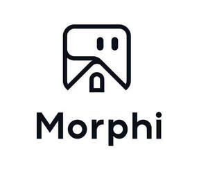

Trade Mark Journal No.2025/052 26 December 2025
UK00004310304 15 December 2025 (7,9,10,11,12,35,42)

- Class 7
- Lawn mowers; Agricultural machines; Packaging machines; Industrial robots; Robots for welding; Robots for cleaning; Washing installations for vehicles; Machines and apparatus for cleaning, electric; Food preparation machines, electromechanical; Kitchen machines, electric; Shredders [machines] for industrial use; Handling machines, automatic [manipulators]; Agricultural machines for harvesting; Food mixers (Electric -); Automatic packing machines for food; Food processors, electric; Electric concrete vibrators; Machines and apparatus for polishing [electric]; Tea processing machines; Robotic arms for industrial purposes.
- Class 9
- Telepresence robots; User-programmable humanoid robots, not configured; Computer chatbot software for simulating conversations; Computer programs [downloadable software]; Downloadable mobile applications; Wearable activity trackers; Security surveillance robots; Humanoid robots having communication and learning functions for assisting and entertaining people; Laboratory robots; Teaching robots; Humanoid robots with artificial intelligence for use in scientific research; Humanoid robots with artificial intelligence for preparing beverages; Electronic chips; Humanoid robots with artificial intelligence for use in household cleaning and laundry; Facial recognition apparatus; Point-of-sale [POS] terminals; Electronic automatic ticket examination machines; Timers for automatic apparatus; Record players; Protection devices for personal use against accidents.
- Class 10
- Surgical robots; Medical apparatus and instruments; Nanorobots for medical purposes; Medical robots for use in cognitive therapy for children; Electric massage apparatus for household use; Galvanic therapeutic appliances; Wearable walking assistive robots for medical purposes; Pet walking aids; Dental apparatus and instruments; Dental apparatus, electric; Medical instruments for use as aids to hearing; Baby feeding pacifiers; Suture materials; Walking aids for medical purposes; Robotic exoskeleton suits for medical purposes; Breast pumps; Medical knee braces; Vibromassage apparatus; Body composition monitors; Computer controlled exercise apparatus for therapeutic use.
- Class 11
- Robotic air purifiers for household purposes; Air filtering installations; Air humidifiers; Lighting apparatus for vehicles; Lighting apparatus; Cooking apparatus and installations; Cooling installations and machines; Watering installations, automatic; Apparatus for fertilizer irrigation; Lights for vehicles; Lamps; Sanitary installations and apparatus; Water purifying apparatus and machines; Heating apparatus for vehicles; Heating apparatus; Central heating radiators; Dryers for the face using warm air; Electric hot air hand dryers; Disinfectant apparatus; Radiators, electric.
- Class 12
- Self-driving robots for delivery; Self-driving cars; Trucks; Unmanned vehicles; Remote control vehicles, other than toys; Autonomous land vehicles; Delivery drones; Aeronautical apparatus, machines and appliances; Camera drones, other than toys; Remotely operated vehicles for underwater inspections; Electric vehicles; Electric bicycles; Carts; Electric wheelchairs; Snow-going vehicles; Suspension shock absorbers for vehicles; Anti-theft devices for vehicles; Aerial conveyors; Transmission mechanisms for land vehicles; Baby carriages.
- Class 35
- Advertising and publicity services; Shop window dressings; Online advertising on a computer network; Business management consultancy; Arranging and conducting of marketing events; Business management of logistics for others; Consumer profiling for commercial or marketing purposes; Conducting of market research; Providing business information, also via internet, the cable network or other forms of data transfer; Marketing; Provision of an on-line marketplace for buyers and sellers of goods and services; Systemization of information into computer databases; Updating and maintenance of data in computer databases; Rental of vending machines; Personnel management; Computerized file management; Export and import agencies; Sponsorship search; Wholesale services for pharmaceutical, veterinary and sanitary preparations and medical supplies; Business auditing.
- Class 42
- Research relating to the computerised automation of industrial processes; Research in the field of artificial intelligence technology; Technological research; Mechanical research; Artificial intelligence consultancy; Industrial design; Research in the field of building construction; Rental of user-programmable humanoid robots, not configured; Computer software design; Development of computer platforms; Consultancy in the design and development of computer hardware; Graphic arts design; Cartographic or thermographic measurement services by drone; Medical laboratory services; Meteorological information; Material testing; Design of clothing; Authenticating works of art; Weighing goods for others; Engineering services relating to robotics.
ShenZhen MoQi Intelligent Technology Co., Ltd.
Representative: HUICHENG SERVICES CO., LTD